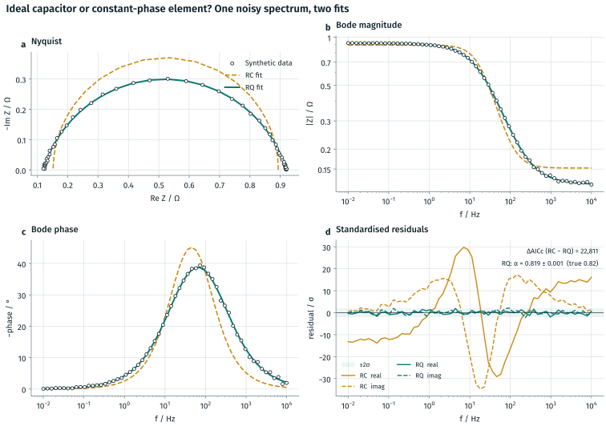

Ideal capacitor or constant-phase element?
The same noisy spectrum, fitted twice. Weighted complex least squares with an analytic Jacobian and multistart, compared by AICc, with identifiability checked from the Jacobian's singular values.
- ±2σRQ residuals look like noise. RC residuals reach 30σ and have obvious structure.
- 0.819Recovered α, ± 0.001, against a true value of 0.82.
- 22,800AICc difference in favour of the constant-phase model.